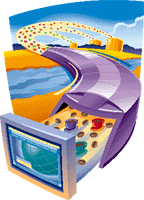

jConnect for JDBC 7.0 Documentation
jConnect Javadocs
English Html
--
jConnect documentation on the web
Online Documentation
--
If you have questions or encounter problems with jConnect please contact
jConnect Discussion Forum
Last updated: October 11, 2009